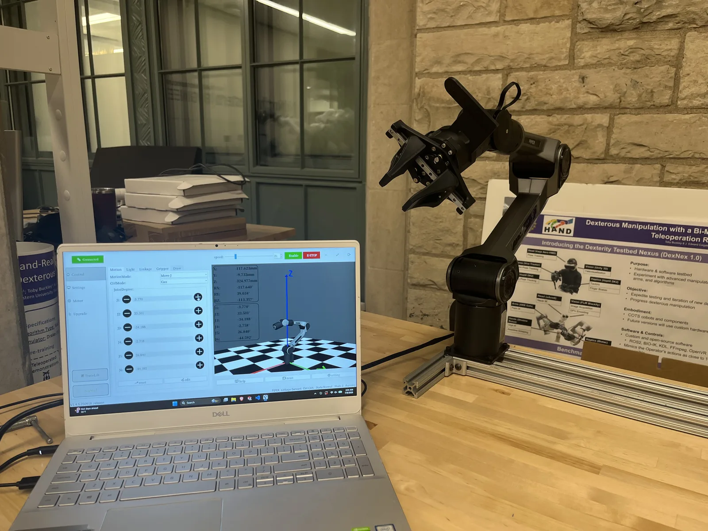
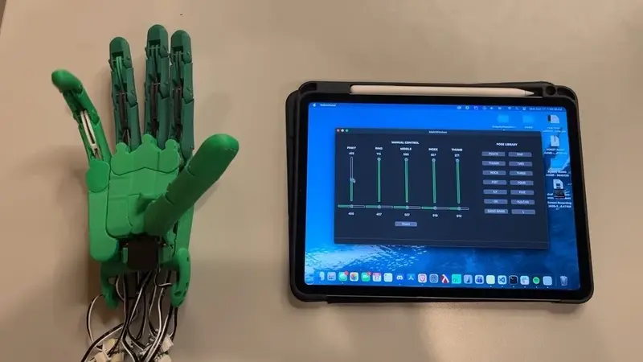

Created a software interface to control a robotic hand and built a dual-arm teleoperation system.

Overview
As an undergraduate research assistant at the Human Augmentation via Dexterity Engineering Research Center (HAND ERC), I have contributed to several projects involving robotic hands and tactile sensing. I first built a database of commercial robotic hands, including standardized specifications and images, to support comparison and benchmarking.
I also developed a Qt interface in C++ for the Robot Nano Hand, a 3D-printed hand. The interface uses sliders and configurable presets to control the hand in real time and assess its dexterity and performance (see Fig. 1.).
Next, I collected 10 hours of tactile data across 20 tasks using Daimon robotic claw grippers. The tasks ranged from putting a shirt on a clothes hanger to tying a half knot with shoelaces. This data will be used to train a robot with tactile sensors to complete tasks autonomously.
To explore ROS2, I worked with a pair of AgileX Piper arms and wrote a program that mirrored the movement of one arm onto the other in real time (see Fig. 2.). I also used the teleoperation setup to control an arm to click through a CAPTCHA with a mouse (see Fig. 3.).
Gallery

Fig. 1. A video demo of the Robot Nano Hand being controlled by a Qt interface using sliders and presets.